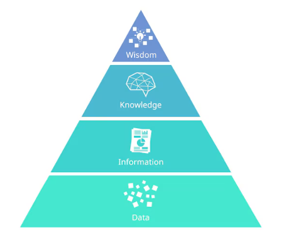
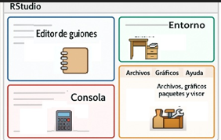

Code
edad <- 35Al finalizar esta clase, el/la estudiante deberá ser capaz de:
Comprender qué significa trabajar con datos y por qué es central en la toma de decisiones.
Diferenciar datos, información, conocimiento y sabiduría.
Reconocer la importancia de la calidad del dato.
Identificar las herramientas principales que se utilizarán durante el curso (R, RStudio y paquetes).
De manera consciente o inconsciente, las personas toman decisiones todo el tiempo: personales, profesionales, organizacionales. Algunas decisiones tienen bajo impacto, otras pueden tener consecuencias importantes y duraderas.
En contextos académicos, científicos, productivos u organizacionales, las decisiones no deberían basarse solo en intuición, sino en información confiable obtenida a partir de datos.
Aquí es donde entra el análisis de datos: como una herramienta para reducir la incertidumbre y mejorar la calidad de las decisiones.
Este enfoque se basa en el modelo conceptual conocido como DIKW (Data–Information–Knowledge–Wisdom), ampliamente utilizado en gestión del conocimiento y análisis de sistemas (Ackoff, 1989).
Para entender el rol del análisis de datos, utilizamos un marco conceptual clásico: la pirámide DIKW, que describe la relación entre:
Datos (Data)
Información (Information)
Conocimiento (Knowledge)
Sabiduría (Wisdom)

Los datos son hechos crudos: números, símbolos o registros sin contexto. Por sí solos no explican nada ni responden preguntas. Un listado de valores, una planilla llena de números o una base de datos sin analizar son solo datos.
La información surge cuando los datos se organizan, ordenan y contextualizan. La información responde preguntas como: qué ocurrió, cuándo, dónde o cuánto.
El conocimiento aparece cuando la información se interpreta, se relaciona con experiencias previas y permite comprender patrones, variabilidad y relaciones. El conocimiento responde al “cómo”.
La sabiduría implica usar el conocimiento con criterio, prudencia y visión de largo plazo. Permite decidir qué acciones valen la pena. Es el nivel más alto y se construye con el tiempo y la experiencia.
Este curso se enfoca principalmente en transformar datos en información y conocimiento, sentando las bases para una mejor toma de decisiones.
Los datos son la materia prima del análisis. Sin datos adecuados, no hay información confiable ni conocimiento útil.
Sin embargo, obtener datos no es gratis: requiere tiempo, recursos, tecnología y decisiones metodológicas. Por eso es importante aplicar el principio de parsimonia:
No recolectar más datos de los necesarios, pero sí los datos correctos.
Antes de analizar, siempre debemos preguntarnos:
¿Para qué se recolectaron estos datos?
¿Son relevantes para el problema que queremos estudiar?
¿Qué limitaciones tienen?
Para que los datos puedan transformarse en información y conocimiento, deben tener calidad. Sin entrar aún en definiciones técnicas complejas, en esta etapa nos quedamos con algunas ideas fundamentales:
Exactitud: que el dato represente correctamente la realidad.
Completitud: que no falten valores relevantes.
Consistencia: que no haya contradicciones internas.
Actualización: que el dato sea pertinente en el tiempo.
Un principio básico del análisis de datos es:
Si los datos son de mala calidad, el resultado del análisis también lo será.
Para trabajar con datos utilizaremos el lenguaje R y el entorno RStudio.
R es un lenguaje de programación y un entorno de software diseñado para el análisis estadístico, la visualización de datos y la ciencia de datos. Permite realizar cálculos, generar gráficos y construir modelos.
RStudio es un entorno de desarrollo integrado (IDE) que facilita el trabajo con R. Proporciona una interfaz organizada para escribir código, ejecutarlo, visualizar resultados y gestionar proyectos.

Los paquetes son extensiones que agregan funciones específicas a R. Permiten realizar tareas de forma más rápida, clara y eficiente.
R es el idioma.
RStudio es la biblioteca donde trabajamos.
Los paquetes son colecciones de libros especializados.

Instalar un paquete es descargarlo en la computadora (se hace una sola vez).
Cargar un paquete es activarlo para usarlo en una sesión de trabajo (se hace cada vez que se necesita).
Un objeto es cualquier elemento que almacena información en la memoria de R. Puede contener un único valor, una colección de valores, una tabla de datos o incluso una función.
En otras palabras, un objeto es el lugar donde R guarda los datos con los que trabajaremos.
La asignación se realiza mediante el operador <-.
edad <- 35Aquí:
edad es el nombre del objeto.
35 es el valor almacenado.
Deben comenzar con una letra.
Pueden contener números.
Pueden contener guiones bajos (_).
No deben contener espacios.
Conviene utilizar nombres descriptivos.
Correctos:
Incorrectos
Podemos visualizar su contenido escribiendo el nombre del objeto.
No hace falta presentar todos los objetos de R. Para este curso bastan cuatro.
Un vector es una colección de elementos del mismo tipo.
paises <- c( "Argentina", "Brasil", "Chile" )temperaturas <- c(
0.4,
0.6,
0.8
)Es una tabla donde
cada fila representa una observación;
cada columna representa una variable.
Es el objeto más utilizado en análisis de datos.
datos <- data.frame(
pais = c("Argentina", "Brasil"),
emision = c(120,350)
)Es la versión moderna del data frame.
Cuando usamos Tidyverse
Los factores representan variables categóricas.
continente <- factor(
c(
"América",
"Europa",
"Asia"
)
)class(datos)[1] "data.frame"Cada vez que se crea un objeto, éste aparece en el panel Environment de RStudio.
Por ejemplo,
pais <- "Argentina"
anio <- 2020
temperatura <- 0.56R puede utilizarse como una calculadora avanzada, permitiendo realizar operaciones matemáticas, trabajar con funciones y almacenar resultados en objetos.
Por ejemplo en la consola escribir:
2+2[1] 4log(20)[1] 2.995732sqrt(89)[1] 9.433981También es posible guardar resultados en objetos:
x <- 10
y <- 5
x + y[1] 15En R, el símbolo <- se utiliza para asignar valores a objetos.
Hasta aquí, las instrucciones pueden escribirse directamente en la consola. Sin embargo, trabajar únicamente en la consola tiene una limitación importante: el código no queda guardado de manera organizada.
Por esta razón, habitualmente se trabaja utilizando scripts.
Un script es un archivo de texto con extensión .R que contiene instrucciones escritas en el lenguaje R. Los scripts permiten:
Guardar el trabajo realizado
Reutilizar código Corregir errores fácilmente Compartir análisis con otras personas
Mantener un registro ordenado del análisis
Los scripts también permiten agregar comentarios para documentar el código:
# Cálculo del índice de masa corporal
peso <- 78
altura <- 1.72
imc <- peso/(altura^2)
imc[1] 26.3656En RStudio, un script puede crearse desde:
File → New File → R Script
Las líneas de código pueden ejecutarse individualmente utilizando:
Ctrl + Enter (Windows/Linux)
Cmd + Enter (Mac)
El uso de scripts constituye el primer paso hacia un trabajo más organizado y reproducible en análisis de datos.
A medida que los análisis se vuelven más complejos, surge la necesidad de integrar no solo código, sino también explicaciones, resultados y gráficos en un único documento.
En este contexto aparece el enfoque de la ciencia reproducible.
Según [@peng2011], un análisis es reproducible cuando otras personas pueden obtener los mismos resultados utilizando los mismos datos y el mismo código.
Para trabajar bajo este enfoque utilizaremos Quarto, una herramienta que permite crear documentos reproducibles integrando:
Texto explicativo
Código en R
Tablas y gráficos
Resultados de modelos y análisis
En un único archivo reproducible.
El objetivo no es solo analizar datos, sino documentar y comunicar el proceso completo del ana´lsis de datos de una manera clara, ordenada y reproducbiel favoreciendo la transparencia y el aprendizaje.
En esta primera clase vimos:
Por qué los datos son centrales en la toma de decisiones.
Cómo se relacionan datos, información, conocimiento y sabiduría.
La importancia de la calidad del dato.
Las herramientas que utilizaremos durante el curso.
La filosofía de la ciencia reproducible.
En las próximas clases comenzaremos a trabajar de manera más práctica con datos reales, aprendiendo a importarlos, organizarlos y explorarlos paso a paso.
Ackoff, R. L. (1989). From data to wisdom. Journal of Applied Systems Analysis, 16, 3–9.
Peng, R. D. (2011). Reproducible research in computational science. Science, 334(6060), 1226–1227. https://doi.org/10.1126/science.1213847
Posit PBC. (2025). Quarto: Sistema de publicación científica y técnica. https://quarto.org